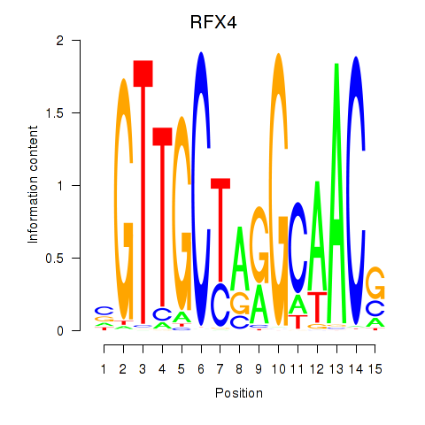
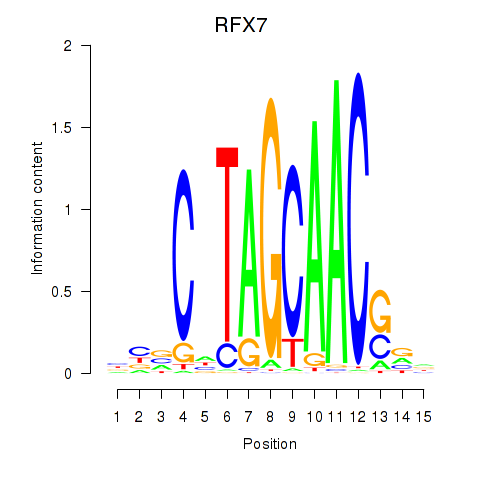
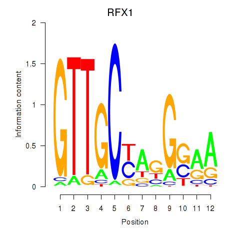

Motif ID: RFX7_RFX4_RFX1
Z-value: 0.686



Transcription factors associated with RFX7_RFX4_RFX1:
| Gene Symbol | Entrez ID | Gene Name |
|---|---|---|
| RFX1 | ENSG00000132005.4 | RFX1 |
| RFX4 | ENSG00000111783.8 | RFX4 |
| RFX7 | ENSG00000181827.10 | RFX7 |
![](http://string-db.org/api/image/network?network_flavor=evidence&limit=0&species=9606&caller_identity=MARA&identifiers=9606.ENSP00000234038%0D9606.ENSP00000332204%0D9606.ENSP00000366179%0D9606.ENSP00000471312%0D9606.ENSP00000354223%0D9606.ENSP00000361266%0D9606.ENSP00000324651%0D9606.ENSP00000270115%0D9606.ENSP00000326042%0D9606.ENSP00000284486%0D9606.ENSP00000268699%0D9606.ENSP00000311273%0D9606.ENSP00000326870%0D9606.ENSP00000262395%0D9606.ENSP00000321976%0D9606.ENSP00000318197%0D9606.ENSP00000422753%0D9606.ENSP00000324464%0D9606.ENSP00000006777%0D9606.ENSP00000327077%0D9606.ENSP00000305810%0D9606.ENSP00000221167%0D9606.ENSP00000261182%0D9606.ENSP00000234040%0D9606.ENSP00000368138%0D9606.ENSP00000333537%0D9606.ENSP00000435550%0D9606.ENSP00000355556%0D9606.ENSP00000382708%0D9606.ENSP00000215582%0D9606.ENSP00000219168%0D9606.ENSP00000391404%0D9606.ENSP00000323275%0D9606.ENSP00000381412%0D9606.ENSP00000377176%0D9606.ENSP00000299732%0D9606.ENSP00000335636%0D9606.ENSP00000244051%0D9606.ENSP00000356779%0D9606.ENSP00000014914%0D9606.ENSP00000438125%0D9606.ENSP00000382507%0D9606.ENSP00000273077%0D9606.ENSP00000243878%0D9606.ENSP00000263116%0D9606.ENSP00000300249%0D9606.ENSP00000219789%0D9606.ENSP00000413929%0D9606.ENSP00000238618%0D9606.ENSP00000450581%0D9606.ENSP00000013807%0D9606.ENSP00000362850%0D9606.ENSP00000291568%0D9606.ENSP00000324570%0D9606.ENSP00000335447%0D9606.ENSP00000270223%0D9606.ENSP00000353362%0D9606.ENSP00000071281%0D9606.ENSP00000405268%0D9606.ENSP00000253792%0D9606.ENSP00000290974%0D9606.ENSP00000299882%0D9606.ENSP00000301072%0D9606.ENSP00000301071%0D9606.ENSP00000347896%0D9606.ENSP00000263368%0D9606.ENSP00000268483%0D9606.ENSP00000268482%0D9606.ENSP00000347427%0D9606.ENSP00000012443%0D9606.ENSP00000246069%0D9606.ENSP00000352929%0D9606.ENSP00000365534%0D9606.ENSP00000333374%0D9606.ENSP00000334280%0D9606.ENSP00000424243%0D9606.ENSP00000367830%0D9606.ENSP00000343633%0D9606.ENSP00000375691%0D9606.ENSP00000336799%0D9606.ENSP00000350854%0D9606.ENSP00000308258%0D9606.ENSP00000408295%0D9606.ENSP00000310094%0D9606.ENSP00000272425%0D9606.ENSP00000417841%0D9606.ENSP00000311313%0D9606.ENSP00000356399%0D9606.ENSP00000265843%0D9606.ENSP00000346725%0D9606.ENSP00000310593%0D9606.ENSP00000312789%0D9606.ENSP00000282541%0D9606.ENSP00000348278%0D9606.ENSP00000227525%0D9606.ENSP00000318902%0D9606.ENSP00000361927%0D9606.ENSP00000418210%0D9606.ENSP00000360644%0D9606.ENSP00000218516%0D9606.ENSP00000380679)
{kind=link}
{kind=link}
{kind=link}
{kind=link}
Top targets:
Gene overrepresentation in biological_process category:
| Log-likelihood per target | Total log-likelihood | Term | Description |
|---|---|---|---|
| 0.3 | 0.9 | GO:0019243 | methylglyoxal catabolic process to D-lactate via S-lactoyl-glutathione(GO:0019243) methylglyoxal catabolic process(GO:0051596) methylglyoxal catabolic process to lactate(GO:0061727) |
| 0.1 | 0.4 | GO:0046168 | glycerol-3-phosphate catabolic process(GO:0046168) |
| 0.1 | 2.4 | GO:0007175 | negative regulation of epidermal growth factor-activated receptor activity(GO:0007175) |
| 0.1 | 0.2 | GO:0051086 | chaperone mediated protein folding independent of cofactor(GO:0051086) |
| 0.0 | 0.2 | GO:1902361 | mitochondrial pyruvate transport(GO:0006850) mitochondrial pyruvate transmembrane transport(GO:1902361) |
| 0.0 | 0.7 | GO:0042167 | porphyrin-containing compound catabolic process(GO:0006787) tetrapyrrole catabolic process(GO:0033015) heme catabolic process(GO:0042167) pigment catabolic process(GO:0046149) |
| 0.0 | 0.1 | GO:0018307 | enzyme active site formation(GO:0018307) |
| 0.0 | 0.5 | GO:0007000 | nucleolus organization(GO:0007000) |
| 0.0 | 0.3 | GO:1900262 | regulation of DNA-directed DNA polymerase activity(GO:1900262) positive regulation of DNA-directed DNA polymerase activity(GO:1900264) |
| 0.0 | 0.2 | GO:0090158 | endoplasmic reticulum membrane organization(GO:0090158) |
| 0.0 | 0.2 | GO:0019348 | dolichol metabolic process(GO:0019348) |
| 0.0 | 0.4 | GO:1902412 | regulation of mitotic cytokinesis(GO:1902412) |
| 0.0 | 0.2 | GO:0032625 | interleukin-21 production(GO:0032625) interleukin-21 secretion(GO:0072619) |
| 0.0 | 0.1 | GO:0032203 | telomere formation via telomerase(GO:0032203) |
| 0.0 | 0.2 | GO:0036324 | vascular endothelial growth factor receptor-2 signaling pathway(GO:0036324) |
| 0.0 | 0.2 | GO:0022027 | interkinetic nuclear migration(GO:0022027) |
| 0.0 | 0.5 | GO:0030043 | actin filament fragmentation(GO:0030043) |
| 0.0 | 0.4 | GO:0009957 | epidermal cell fate specification(GO:0009957) |
| 0.0 | 0.1 | GO:0034499 | late endosome to Golgi transport(GO:0034499) |
| 0.0 | 0.2 | GO:0000720 | pyrimidine dimer repair by nucleotide-excision repair(GO:0000720) |
| 0.0 | 0.2 | GO:0001550 | ovarian cumulus expansion(GO:0001550) fused antrum stage(GO:0048165) |
| 0.0 | 0.2 | GO:0017196 | N-terminal peptidyl-methionine acetylation(GO:0017196) |
| 0.0 | 0.1 | GO:0072344 | rescue of stalled ribosome(GO:0072344) |
| 0.0 | 0.1 | GO:0033274 | response to vitamin B2(GO:0033274) heterochromatin maintenance(GO:0070829) |
| 0.0 | 0.0 | GO:1990927 | calcium ion regulated lysosome exocytosis(GO:1990927) |
| 0.0 | 0.1 | GO:2001160 | regulation of histone H3-K79 methylation(GO:2001160) positive regulation of histone H3-K79 methylation(GO:2001162) |
| 0.0 | 0.2 | GO:0045144 | meiotic sister chromatid segregation(GO:0045144) |
| 0.0 | 0.1 | GO:1903615 | regulation of protein tyrosine phosphatase activity(GO:1903613) positive regulation of protein tyrosine phosphatase activity(GO:1903615) |
| 0.0 | 0.1 | GO:2001106 | regulation of Rho guanyl-nucleotide exchange factor activity(GO:2001106) |
| 0.0 | 0.1 | GO:0051097 | negative regulation of helicase activity(GO:0051097) |
| 0.0 | 0.1 | GO:0006423 | cysteinyl-tRNA aminoacylation(GO:0006423) |
| 0.0 | 0.1 | GO:0044376 | RNA polymerase II complex import to nucleus(GO:0044376) RNA polymerase III complex localization to nucleus(GO:1990022) |
| 0.0 | 0.2 | GO:1903756 | positive regulation of dendritic spine maintenance(GO:1902952) regulation of transcription from RNA polymerase II promoter by histone modification(GO:1903756) negative regulation of transcription from RNA polymerase II promoter by histone modification(GO:1903758) |
| 0.0 | 0.1 | GO:1900533 | medium-chain fatty-acyl-CoA catabolic process(GO:0036114) long-chain fatty-acyl-CoA catabolic process(GO:0036116) palmitic acid metabolic process(GO:1900533) palmitic acid biosynthetic process(GO:1900535) |
| 0.0 | 0.2 | GO:1903546 | protein localization to photoreceptor outer segment(GO:1903546) |
| 0.0 | 0.0 | GO:0036451 | cap mRNA methylation(GO:0036451) |
| 0.0 | 0.0 | GO:1902173 | negative regulation of keratinocyte apoptotic process(GO:1902173) |
| 0.0 | 0.1 | GO:0010983 | positive regulation of high-density lipoprotein particle clearance(GO:0010983) |
| 0.0 | 0.2 | GO:2000324 | positive regulation of glucocorticoid receptor signaling pathway(GO:2000324) |
| 0.0 | 0.1 | GO:0002503 | peptide antigen assembly with MHC class II protein complex(GO:0002503) |
| 0.0 | 0.1 | GO:0070092 | regulation of glucagon secretion(GO:0070092) |
| 0.0 | 0.1 | GO:0035469 | determination of pancreatic left/right asymmetry(GO:0035469) |
| 0.0 | 0.1 | GO:1904059 | regulation of locomotor rhythm(GO:1904059) |
| 0.0 | 0.1 | GO:0016476 | regulation of embryonic cell shape(GO:0016476) |
| 0.0 | 0.1 | GO:2001288 | positive regulation of caveolin-mediated endocytosis(GO:2001288) |
| 0.0 | 0.1 | GO:0036111 | very long-chain fatty-acyl-CoA metabolic process(GO:0036111) |
| 0.0 | 0.1 | GO:2001181 | positive regulation of interleukin-10 secretion(GO:2001181) |
| 0.0 | 0.1 | GO:0001778 | plasma membrane repair(GO:0001778) |
| 0.0 | 0.1 | GO:0006659 | phosphatidylserine biosynthetic process(GO:0006659) |
| 0.0 | 0.1 | GO:1903644 | regulation of chaperone-mediated protein folding(GO:1903644) |
| 0.0 | 0.2 | GO:0038166 | angiotensin-activated signaling pathway(GO:0038166) |
| 0.0 | 0.0 | GO:1901526 | positive regulation of macromitophagy(GO:1901526) positive regulation of mitophagy in response to mitochondrial depolarization(GO:1904925) |
| 0.0 | 0.0 | GO:0006419 | alanyl-tRNA aminoacylation(GO:0006419) |
| 0.0 | 1.0 | GO:0043268 | positive regulation of potassium ion transport(GO:0043268) |
| 0.0 | 0.2 | GO:0015693 | magnesium ion transport(GO:0015693) |
| 0.0 | 0.1 | GO:0007228 | positive regulation of hh target transcription factor activity(GO:0007228) |
| 0.0 | 0.0 | GO:0061075 | regulation of transcription from RNA polymerase II promoter involved in forebrain neuron fate commitment(GO:0021882) cerebral cortex GABAergic interneuron fate commitment(GO:0021893) positive regulation of neural retina development(GO:0061075) positive regulation of retina development in camera-type eye(GO:1902868) positive regulation of amacrine cell differentiation(GO:1902871) |
| 0.0 | 0.0 | GO:0070446 | cellular response to caloric restriction(GO:0061433) negative regulation of oligodendrocyte progenitor proliferation(GO:0070446) |
| 0.0 | 0.0 | GO:1905224 | clathrin-coated pit assembly(GO:1905224) |
Gene overrepresentation in cellular_component category:
| Log-likelihood per target | Total log-likelihood | Term | Description |
|---|---|---|---|
| 0.1 | 0.3 | GO:0000939 | nuclear MIS12/MIND complex(GO:0000818) condensed chromosome inner kinetochore(GO:0000939) |
| 0.1 | 0.2 | GO:0033185 | dolichol-phosphate-mannose synthase complex(GO:0033185) |
| 0.1 | 0.2 | GO:0009346 | citrate lyase complex(GO:0009346) |
| 0.1 | 0.4 | GO:0009331 | glycerol-3-phosphate dehydrogenase complex(GO:0009331) |
| 0.1 | 0.1 | GO:0031253 | cell projection membrane(GO:0031253) |
| 0.0 | 0.4 | GO:0070545 | PeBoW complex(GO:0070545) |
| 0.0 | 0.3 | GO:0005663 | DNA replication factor C complex(GO:0005663) |
| 0.0 | 0.2 | GO:1990635 | proximal dendrite(GO:1990635) |
| 0.0 | 0.1 | GO:0055087 | Ski complex(GO:0055087) |
| 0.0 | 0.2 | GO:0000110 | nucleotide-excision repair factor 1 complex(GO:0000110) |
| 0.0 | 0.4 | GO:0000235 | astral microtubule(GO:0000235) aster(GO:0005818) |
| 0.0 | 0.1 | GO:0005674 | transcription factor TFIIF complex(GO:0005674) |
| 0.0 | 0.1 | GO:0035371 | microtubule plus-end(GO:0035371) |
| 0.0 | 0.1 | GO:0000242 | pericentriolar material(GO:0000242) |
| 0.0 | 0.0 | GO:0044609 | DBIRD complex(GO:0044609) |
| 0.0 | 0.2 | GO:0031414 | N-terminal protein acetyltransferase complex(GO:0031414) |
| 0.0 | 0.1 | GO:0061617 | MICOS complex(GO:0061617) |
| 0.0 | 0.1 | GO:0036157 | outer dynein arm(GO:0036157) |
| 0.0 | 0.1 | GO:0032311 | angiogenin-PRI complex(GO:0032311) |
| 0.0 | 1.0 | GO:0005881 | cytoplasmic microtubule(GO:0005881) |
| 0.0 | 0.1 | GO:0033565 | ESCRT-0 complex(GO:0033565) |
| 0.0 | 0.5 | GO:0034451 | centriolar satellite(GO:0034451) |
| 0.0 | 0.2 | GO:0002199 | zona pellucida receptor complex(GO:0002199) |
| 0.0 | 0.2 | GO:1990712 | HFE-transferrin receptor complex(GO:1990712) |
| 0.0 | 0.3 | GO:0030687 | preribosome, large subunit precursor(GO:0030687) |
Gene overrepresentation in molecular_function category:
| Log-likelihood per target | Total log-likelihood | Term | Description |
|---|---|---|---|
| 0.3 | 0.9 | GO:0004416 | hydroxyacylglutathione hydrolase activity(GO:0004416) |
| 0.2 | 0.7 | GO:0004074 | biliverdin reductase activity(GO:0004074) |
| 0.1 | 0.4 | GO:0004367 | glycerol-3-phosphate dehydrogenase [NAD+] activity(GO:0004367) |
| 0.1 | 0.6 | GO:0072345 | NAADP-sensitive calcium-release channel activity(GO:0072345) |
| 0.1 | 0.2 | GO:0003881 | CDP-diacylglycerol-inositol 3-phosphatidyltransferase activity(GO:0003881) |
| 0.1 | 0.4 | GO:0003998 | acylphosphatase activity(GO:0003998) |
| 0.1 | 0.2 | GO:0004582 | dolichyl-phosphate beta-D-mannosyltransferase activity(GO:0004582) |
| 0.1 | 0.2 | GO:0003878 | ATP citrate synthase activity(GO:0003878) |
| 0.1 | 0.4 | GO:0005119 | smoothened binding(GO:0005119) |
| 0.0 | 1.9 | GO:0032266 | phosphatidylinositol-3-phosphate binding(GO:0032266) |
| 0.0 | 0.3 | GO:0003689 | DNA clamp loader activity(GO:0003689) protein-DNA loading ATPase activity(GO:0033170) |
| 0.0 | 0.2 | GO:0030144 | alpha-1,6-mannosylglycoprotein 6-beta-N-acetylglucosaminyltransferase activity(GO:0030144) |
| 0.0 | 0.1 | GO:0001181 | transcription factor activity, core RNA polymerase I binding(GO:0001181) |
| 0.0 | 0.1 | GO:0004489 | methylenetetrahydrofolate reductase (NAD(P)H) activity(GO:0004489) |
| 0.0 | 0.1 | GO:0015633 | zinc transporting ATPase activity(GO:0015633) |
| 0.0 | 0.2 | GO:0050833 | pyruvate transmembrane transporter activity(GO:0050833) |
| 0.0 | 0.1 | GO:0005135 | erythropoietin receptor binding(GO:0005128) interleukin-3 receptor binding(GO:0005135) |
| 0.0 | 0.2 | GO:1990599 | 3' overhang single-stranded DNA endodeoxyribonuclease activity(GO:1990599) |
| 0.0 | 0.1 | GO:0004792 | thiosulfate sulfurtransferase activity(GO:0004792) |
| 0.0 | 0.1 | GO:0004421 | hydroxymethylglutaryl-CoA synthase activity(GO:0004421) |
| 0.0 | 0.1 | GO:0003943 | N-acetylgalactosamine-4-sulfatase activity(GO:0003943) |
| 0.0 | 0.1 | GO:0004817 | cysteine-tRNA ligase activity(GO:0004817) |
| 0.0 | 0.1 | GO:0016936 | galactoside binding(GO:0016936) |
| 0.0 | 0.1 | GO:0070568 | guanylyltransferase activity(GO:0070568) |
| 0.0 | 0.0 | GO:0004483 | mRNA (nucleoside-2'-O-)-methyltransferase activity(GO:0004483) |
| 0.0 | 0.1 | GO:0050816 | phosphothreonine binding(GO:0050816) |
| 0.0 | 0.2 | GO:0005025 | transforming growth factor beta receptor activity, type I(GO:0005025) |
| 0.0 | 0.1 | GO:0004758 | serine C-palmitoyltransferase activity(GO:0004758) C-palmitoyltransferase activity(GO:0016454) |
| 0.0 | 0.1 | GO:0017169 | CDP-alcohol phosphatidyltransferase activity(GO:0017169) |
| 0.0 | 0.1 | GO:0039552 | RIG-I binding(GO:0039552) |
| 0.0 | 0.2 | GO:0004596 | peptide alpha-N-acetyltransferase activity(GO:0004596) |
| 0.0 | 0.1 | GO:0044594 | 3alpha,7alpha,12alpha-trihydroxy-5beta-cholest-24-enoyl-CoA hydratase activity(GO:0033989) 17-beta-hydroxysteroid dehydrogenase (NAD+) activity(GO:0044594) |
| 0.0 | 0.1 | GO:0010465 | nerve growth factor receptor activity(GO:0010465) |
| 0.0 | 0.0 | GO:0045131 | pre-mRNA branch point binding(GO:0045131) |
| 0.0 | 0.0 | GO:0008431 | vitamin E binding(GO:0008431) |
| 0.0 | 0.0 | GO:0004813 | alanine-tRNA ligase activity(GO:0004813) |
| 0.0 | 0.1 | GO:0030160 | GKAP/Homer scaffold activity(GO:0030160) |
| 0.0 | 0.0 | GO:0046970 | NAD-dependent histone deacetylase activity (H4-K16 specific)(GO:0046970) |
| 0.0 | 0.0 | GO:0001003 | polymerase III regulatory region sequence-specific DNA binding(GO:0000992) RNA polymerase III type 1 promoter sequence-specific DNA binding(GO:0001002) RNA polymerase III type 2 promoter sequence-specific DNA binding(GO:0001003) |
Gene overrepresentation in C2:CP category:
| Log-likelihood per target | Total log-likelihood | Term | Description |
|---|---|---|---|
| 0.0 | 2.1 | PID_ERBB1_INTERNALIZATION_PATHWAY | Internalization of ErbB1 |
| 0.0 | 1.0 | ST_DIFFERENTIATION_PATHWAY_IN_PC12_CELLS | Differentiation Pathway in PC12 Cells; this is a specific case of PAC1 Receptor Pathway. |
Gene overrepresentation in C2:CP:REACTOME category:
| Log-likelihood per target | Total log-likelihood | Term | Description |
|---|---|---|---|
| 0.0 | 1.2 | REACTOME_FORMATION_OF_TUBULIN_FOLDING_INTERMEDIATES_BY_CCT_TRIC | Genes involved in Formation of tubulin folding intermediates by CCT/TriC |
| 0.0 | 0.7 | REACTOME_METABOLISM_OF_PORPHYRINS | Genes involved in Metabolism of porphyrins |
| 0.0 | 0.1 | REACTOME_VIRAL_MESSENGER_RNA_SYNTHESIS | Genes involved in Viral Messenger RNA Synthesis |
| 0.0 | 0.3 | REACTOME_POL_SWITCHING | Genes involved in Polymerase switching |
| 0.0 | 0.2 | REACTOME_SYNTHESIS_OF_SUBSTRATES_IN_N_GLYCAN_BIOSYTHESIS | Genes involved in Synthesis of substrates in N-glycan biosythesis |
|
|
|
|